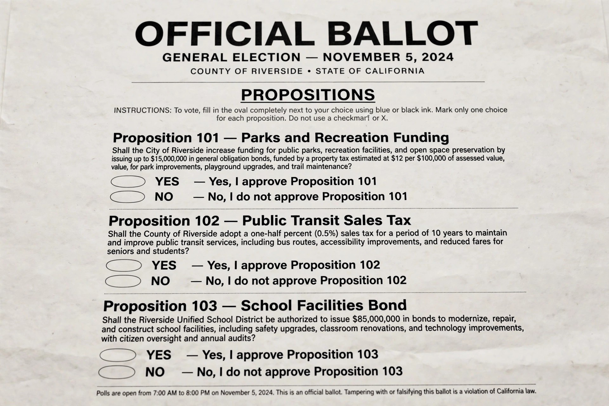

Ballot measure

A ballot measure is a piece of proposed legislation to be approved or rejected by eligible voters, appearing on the ballot alongside candidates for office. Ballot measures are a form of direct democracy and are also called propositions, ballot questions, initiatives or referendums, depending on jurisdiction and on whether the measure originates with citizens or with the legislature.
Types
An initiative is proposed by citizens who gather a required number of signatures to place it on the ballot; a referendum (or "referral") is sent to voters by the legislature, either voluntarily or because the constitution requires approval (for example, for constitutional amendments or bond issues); a recall asks whether an elected official should be removed. In California, initiatives are numbered as "Propositions" — Proposition 13 (1978), which capped property taxes, is among the most consequential in US history.
Use
About half of US states permit citizen initiatives, concentrated in the West, a legacy of the Progressive Era. Switzerland uses referendums extensively at all levels of government. Ballot measures have decided issues from marijuana legalisation and minimum wages to same-sex marriage and abortion policy.
Criticism
Critics argue that well-funded interests dominate signature-gathering and advertising, that ballot language can be confusing, and that voters may approve contradictory measures or spending without taxes. Defenders see measures as a check on unresponsive legislatures and a vital channel of popular sovereignty.
See also: Direct democracy, Referendum, Secret ballot.